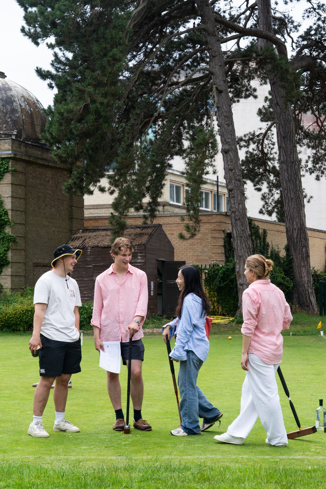
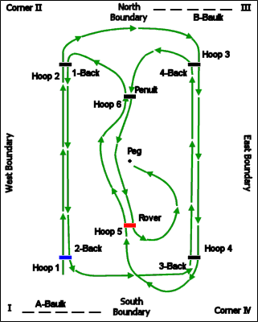

This page contains information about how to learn the basics of the game, where to go to see the OUACC demonstration match, and how to receive free OUACC coaching. For information about suitable equipment to buy for ordinary college and personal use, and details of a potential discount follow this link.
Learning the game

To find information on the web about learning the game and tactics of croquet OUACC recommends the website the book "Know the Game Croquet". This should be available in all good college libraries! For beginners we recommend looking at the simplified laws article on Dr Ian Plummer's Oxford Croquet website. This website houses a huge number of articles wherein you can find out just about anything you want to know regarding croquet. We strongly recommend checking out the coaching section for those eager to improve their tactics.
The Croquet England site also has a basic set of laws and a full set of laws. The full laws are intricate and it is difficult to get the gist of the game from them alone. However, they will resolve almost all disputes!
Coaching
At the start of Trinity term the Oxford University Association Croquet Club offers a Demonstration Match and Free Coaching evenings during the first four weeks of Trinity term:
| Demonstration Match - TBC at the OUACC Lawns in the University Parks |
Free Coaching - 5-6pm Tuesday and Thursday evenings, Weeks 1-4 at the OUACC Lawns in the University Parks. |
The coaching is in the form of four lessons (one a week) that cover the material in the beginners' coaching. The coaching sessions are repeated on Thursday evening 5-6 p.m. You do not have to be a member of the University Croquet Club to attend these sessions, but you must wear flat-soled shoes. All required equipment is supplied, however you are welcome to bring your mallet if you have one.
Joining OUACC
The best way to learn croquet is through playing it, either with friends, or through playing real matches. Membership of OUACC provides access to the best lawns in Oxford, use of Club equipment, and entry into both internal Club competitions and the many inter-club fixtures that take place during the season.
Joining Croquet England
Joining the Croquet England (CqE), the national governing body, entitles you to play in the dozens of tournaments that are held at clubs all around the country. Full Student membership of the CqE is only £9/£16. For more details contact the manager of the CqE, by telephone 01242 242318 (during office hours) or email office@croquetengland.org.uk. Club members playing competitively can become free 'Standard Croquet Association Members' - the OUACC has a small number of free memberships. Please contact the Secretary.
<!--